Dvojný integrál
Robert Mařík
2020
Pokud se matematické výrazy nezobrazují korektně, nechejte znovunačíst stránku (Reload, Crtl+R, F5) nebo použijte html verzi prezentace.
Ovládání: Prezentaci je možno posouvat šipkami nebo mezerníkem. Klávesa "S" zmenšuje písmo, "B" zvětšuje (smaller/bigger). Klávesa "C" zobrazí obsah (content). Klávesou "A" se přepíná režim prezentace/html stránka.
Kliknutím na obrázek se obrázek zvětší na vertikální rozměr okna. Pro zavření zvětšeniny klikněte do zašedlého zbytku stránky nebo použijte klávesu "ESC".
Slidy jsou doprovodným materiálem k předáškám. Některá tvrzení platí
pouze za předpokladů dostatečné spojitosti funkcí nebo jejich
derivací. V jednoduchých technických aplikacích bývají tyto
předpoklady splněny a proto je nezmiňujeme. Přesná formulace vět je
v učebním textu a v odborné literatuře.
V praxi pracujeme s řadou veličin, které se počítají tak, že se parametr systému násobí obsahem.
- Z plošné hustoty a obsahu násobením obdržíme hmotnost.
- Z hloubky nádrže a obsahu obdržíme násobením objem.
- Z tlaku a obsahu obdržíme násobením tlakovou sílu.
Je však otázka, jak tento přístup použít v případě, že daný parametr není po celé ploše na které je rozložen konstantní. Deska může být nehomogenní, nádrž nemusí mít vodorovné dno a ponořená deska nemusí mít všechny své části ve stejné hloubce.
U křivkového integrálu jsme se setkali s momentem setrvačnosti a jak řešit situace, kdy stanovujeme moment setrvačnosti množiny, která má hmotnost rozloženu na křivce. Při výpočtu namáhání nosníků, trámů, polic nebo stromů potřebujeme moment setrvačnosti průřezu nosníku, tj. hmotnost je rozložena ve dvourozměnrné množině a pro jednotlivé body se liší vzdálenost od osy otáčení.
Řešení obou nesnází je stejné: použití dvojného integrálu. Ten si nyní představíme.
Motivace 1 (hmotnost nehomogenní desky)
- Hmotnost desky \(\Omega\) je možno vypočítat jako součin plošné hustoty (hmotnost na jednotku obsahu) a obsahu desky. \[M=\sigma S\]
- Toto funguje pro desky s konstantní plošnou hustotou, kdy má deska ve všech místech stejné fyzikální vlastnostmi.
- Pokud je deska slepená z konečného počtu malých homogenních desek o různných plošných hustotách, určíme hmotnost každé jednotlivé desky samostatně a výsledky potom sečteme. \[m=\sigma_1 S_1+\sigma_2 S_2+\cdots + \sigma_n S_n\]
- Pokud není možné nebo vhodné použít předchozí bod, musíme předpokládat, že hustota je obecnou funkcí. Potom namísto součtu konečného počtu sčítanců následuje nekonečný počet sčítanců a vybudujeme aparát, který nám umožní psát \[m=\iint_\Omega \sigma \,\mathrm dS.\]
Motivace 2 (objem vody v jezeře)
- Objem vody \(V\) v nádrži nebo bazénu (se svislými stěnami, ale jinak i nepravidelného půdorysu \(\Omega\)) vypočteme jako součin obsahu hladiny \(S\) a hloubky vody \(h\), tj. \[V=Sh\] To ovšem platí jenom, pokud je v každém místě stejná hloubka.
- Pokud má jedna část bazénu jinou hloubku než část druhá, vypočteme objem u každé hloubky samostatně a příspěvky sečteme, tj. \[V=S_1h_1+S_2h_2.\]
- Předchozí postup je možné aplikovat pro konečně mnoho hloubek, ale někdy to je nevhodné nebo, v případě spojitě se měnící hloubky, dokonce nemožné. Potom místo součtu konečně mnoha příspěvků použijeme dvojný integrál a dostáváme \[V=\iint_\Omega h\mathrm dS.\]
Motivace 3 (průtok)
- Teče-li průřezem \(\Omega\) tekutina kolmo na průřez rychlostí \(v\), je celkový průtok \(Q\) (objem, který proteče průřezem za jednotku času) dán součinem \[Q=vS,\] kde \(S\) je plošný obsah průřezu.
- Teče-li různými místy průřezu voda různou rychlostí, sečteme jednotlivé příspěvky. \[Q=v_1S_1+v_2S_2+\dots +v_nS_n\]
- Myšlenku z předchozího bodu není snadné udělat, pokud se rychlost mění spojitě. Například v potrubí je rychlost rozdělena parabolicky a ubývá se vzdáleností od středu. Situaci zachraňuje dvojný integrál \[Q=\iint_\Omega v\,\mathrm dS.\]
Dvojný integrál
Pro dvojný integrál použijeme podobnou myšlenkovou konstrukci jako u křivkového integrálu prvního druhu, pouze místo drátu s danou lineární hustotou budeme uvažovat rovinnou ohraničenou desku s danou plošnou hustotou.
- Pokud je hustota desky konstantní, je možno její hmotnost získat jednoduše jako součin plošné hustoty a obsahu.
- Pokud se hustota desky mění a v obecném bodě \((x,y)\) je dána funkcí \(f(x,y)\), můžeme myšlenkově rozdělit desku na malé kousky, v rámci každého malého kousku hustotu aproximovat konstantou, vypočítat hmotnost každého kousku jako součin hustoty a obsahu a všechny hmotnosti sečíst.
- Získaná veličina je aproximací celkové hmotnosti.
V limitním přechodu kdy rozměry všech kousků na něž je deska dělena jdou k nule dostáváme dvojný integrál \[ \iint_\Omega f(x,y)\mathrm{d}x \mathrm{d}y , \] kde \(\Omega\) je oblast v rovině \((x,y)\) definovaná uvažovanou deskou. V aplikacích je častý též zápis \[ \iint_\Omega f(x,y)\mathrm{d}A\] nebo \[ \iint_\Omega f(x,y)\mathrm{d}S.\]
Linearita a aditivita
Dvojný integrál je odvozen (tak jako všechny integrály) pro aditivní veličiny a proto se “dobře snáší” se sčítáním (ať už integrovaných funkcí, nebo integračních oborů) a s násobení integrované funkce konstantnou. Přesněji, platí následující věty.
Věta (linearita dvojného integrálu).
Buď \(f_1\), \(f_2\) funkce integrovatelné v \(\Omega\) a \(c_1\), \(c_2\) libovolná reálná čísla. Platí \[ \iint_{\Omega} \bigl[c_1f_1(x,y)+c_2f_2(x,y)\bigr]\mathrm dx\mathrm dy = c_1\iint_{\Omega} f_1(x,y)\mathrm dx\mathrm dy+ c_2\iint_{\Omega} f_2(x,y)\mathrm dx\mathrm dy \]
Věta (aditivita vzhledem k oboru integrace).
Nechť je množina \(\Omega\) rozdělena na dvě oblasti \(\Omega_1\) a \(\Omega_2\), které mají společné nejvýše hraniční body. Platí \[ \iint_\Omega f(x,y)\mathrm dx\mathrm dy= \iint_{\Omega_1} f(x,y)\mathrm dx\mathrm dy+ \iint_{\Omega_2} f(x,y)\mathrm dx\mathrm dy. \]
Výpočet (oblast mezi funkcemi proměnné \(x\))
V závislosti na tom, jakými nerovnostmi množinu \(\Omega\) definujeme, můžeme pro výpočet dvojného integrálu použít následující věty. Tyto věty udávají, jak je možno dvojný integrál přepsat jako dvojnásobný integrál. Mají název Fubiniovy věty.
Věta (Fubiniova věta).
Nechť \(f\) je funkce spojitá v uzavřené oblasti \[
\Omega=\{(x,y)\in\mathbb{R}^2:{a\leq x\leq b}\text{ a }
{\varphi (x)\leq y\leq \psi (x)}\}.\] Potom \[
\iint_{\Omega}f(x,y)\mathrm{d}x \mathrm{d}y ={\int_{a}^{b}}
\Bigl[ \int_{\varphi (x)}^{\psi(x)}
f(x,y){\mathrm{d}y }\Bigr]{\mathrm{d}x }.
\]
Výpočet (oblast mezi funkcemi proměnné \(y\))
Věta (Fubiniova věta pro jiné pořadí integrace).
Nechť \(f\) je funkce spojitá v uzavřené oblasti \[ \Omega=\{(x,y)\in\mathbb{R}^2:{a\leq y\leq b}\text{ a }
{\varphi (y)\leq x\leq
\psi (y)}\}.
\] Potom \[
\iint_{\Omega}f(x,y)\mathrm{d}x \mathrm{d}y ={\int_a^b}\Bigl[
{\int_{\varphi (y)}^{\psi(y)}}
f(x,y){\mathrm{d}x }\Bigr]{\mathrm{d}y }.
\]
Záměna pořadí integrace
Často je možné oblast integrace zapsat pomocí obou možností uvedených na předchozích slidech. Například oblast na obrázku je možno zapsat buď jako \[\begin{gathered}
0\leq x \leq 2\\
0\leq y\leq x^2
\end{gathered}\] nebo \[\begin{gathered}
0\leq y \leq 4\\
\sqrt{y}\leq x\leq 2.
\end{gathered}\]
Pro integrál funkce \(f(x,y)\) přes takovou množinu tedy máme dvě alternativy: \[\int_0^2 \int _0^{x^2} f(x,y)\;\mathrm{d}y\;\mathrm{d}x\] a \[\int_0^4 \int _{\sqrt y}^{2} f(x,y)\;\mathrm{d}x\;\mathrm{d}y.\]
Všimněte si, že nestačí prosté prohození integrálů. Je nutno přepočítávat meze a hraniční křivky je nutno vyjádřit jednou jako funkce proměnné \(x\) a jednou jako funkce proměnné \(y\). V důsledku tohoto dochází v průběhu výpočtu dvěma různými způsoby k tomu, že pracujeme se dvěma různými integrály. Výsledky jsou stejné, nemusí však být dosažitelné srovnatelnou námahou, jedna z cest může být snazší.
Výpočet (obdélníková oblast)
Výše uvedené problémy se stanovením a případným přepočítáváním mezí při záměně pořadí integrace se nevyskytují při integrování přes obdélníkovou oblast.
Věta (Fubiniova věta na obdélníku).
Nechť \(R=[a,b]\times[c,d]\) je uzavřený obdélník v \(\mathbb{R}^2\) a \(f\) funkce definovaná a spojitá na \(R\). Pak platí \[ \begin{aligned}\iint_R f(x,y)\mathrm{d}x \mathrm{d}y
&=
\int_a^b\Bigl[\int_c^d f(x,y)\mathrm{d}y \Bigr]\mathrm{d}x
\\&=
\int_c^d\Bigl[\int_a^b f(x,y)\mathrm{d}x \Bigr]\mathrm{d}y .\end{aligned}
\]
Platí-li dokonce rovnost \(f(x,y)=g(x)h(y)\), pak \[
\iint_R f(x,y)\mathrm{d}x \mathrm{d}y = \int_a^b g(x) \mathrm{d}x \int_c^d h(y)\mathrm{d}y .
\]
Matematické aplikace dvojného integrálu
- Obsah \(\mu(\Omega)\) množiny \(\Omega\) vypočteme jako integrál \[\mu(\Omega)=\iint_\Omega \mathrm{d}x \mathrm{d}y.\]
- Integrální střední hodnota funkce \(f(x,y)\) definované na množině \(\Omega\) je \[ \frac{\iint_\Omega f(x,y)\mathrm{d}x \mathrm{d}y }{\mu (\Omega)},\] kde \(\mu (\Omega)=\iint_\Omega\mathrm{d}x\mathrm{d}y\) je obsah množiny \(\Omega\).
Objem kopce nebo jezera pomocí vrstevnic
- Obsah množiny ohraničené vrstevnicí na mapě vynásobený rozestupem mezi vrstevnicemi je přibližně roven objemu vrstvy mezi dvěma vrstevnicemi.
- Pokud sečteme obsahy všech vrstevnic a vynásobíme rozestupem mezi těmito vrstevnicemi, dostaneme odhad pro objem kopce. Vlastně je to jako bychom kopec rozřezali na stejně tlusté plátky, naskládali je vedle sebe, sečetli obsahy postav takto vzniklých těles a vynásobili výškou.
- Podobně je možné odhadnout objem jezera.
- V tomto případě je dvojný integrál pouze koncept. Samozřejmě nemáme ambice vyjadřovat vrstevnice v analytickém tvaru a integrovat pomocí Fubiniovy věty. Ke slovu přijde spíše numerický výpočet integrálu.
Fyzikální aplikace dvojného integrálu
- Hmotnost množiny \(M\) je \[m=\iint_M \sigma(x,y)\mathrm{d}x
\mathrm{d}y,\] kde \(\sigma(x,y)\) je plošná hustota (hmotnost vztažená na jednotku povrchu).
- Je-li plošná \(u\) hustota kinetické energie molekul (což je veličina úměrná termodynamické teplotě), je \(\iint_M u\,\mathrm dx\mathrm dy\) celková kinetická energie částic. Tato energie se může měnit tepelnou výměnou. Rychlost, s jakou se mění část vnitřní energie související s teplotou, je \[\frac{\mathrm d}{\mathrm d t}\left(\iint_M u\,\mathrm
dx\mathrm dy\right)\] a odsud odvozujeme rovnici vedení tepla.
- Lineární momenty hmotné množiny \(M\) vzhledem k osám \(y\) a \(x\) jsou rovny \[\iint_M x\sigma(x,y)\mathrm{d}x \mathrm{d}y\] a \[\iint_M y\sigma(x,y)\mathrm{d}x \mathrm{d}y.\]
- Moment setrvačnosti hmotné množiny \(M\) vzhledem k ose je \[J=\iint_M \rho^2(x,y)\sigma(x,y)\mathrm{d}x \mathrm{d}y ,\] kde \(\rho(x,y)\) je vzdálenost bodu \((x,y)\) od osy otáčení. Například pro osu \(x\) je \(\rho(x,y)=y\) a pro osu \(y\) je \(\rho (x,y)=x\). Pro osu procházející kolmo počátkem je \(\rho(x,y)=\sqrt{x^2+y^2}\).
Technické aplikace dvojného integrálu
- Souřadnice těžiště množiny jsou podílem lineárních momentů a celkové hmotnosti množiny.
- Kvadratický moment průřezu (což je moment setrvačnosti pro \(\sigma(x,y)=1\), anglicky second moment of area) je veličina, která hraje podstatnou roli v mechanice (nábytek, stavby) při dimenzování (polic, nosných tyčí, nosníků).
- V technické praxi zpravidla neuvažujeme nekonstantní plošnou hustotu. Potom je možné je bez újmy na obecnosti nahradit jedničkou. Vzorce pro obsah, \(x\)-ovou souřadnici těžiště (\(x_0\)), \(y\)-ovou souřadnici těžiště (\(y_0\)), kvadratický moment vzhledem k ose \(x\) (\(I_x\)) a kvadratický moment vzhledem k ose \(y\) (\(I_y\)) (pro množinu \(M\) s plošnou hustotou \(1\)) jsou \[
\begin{alignedat}{2}
% S&=\iint_M\mathrm{d}x \mathrm{d}y \\
x_0&=\frac 1S \iint_M x\mathrm{d}x \mathrm{d}y ,&\qquad I_x&= \iint_M y^2\mathrm{d}x \mathrm{d}y, \\
y_0&=\frac 1S \iint_M y\mathrm{d}x \mathrm{d}y , & I_y&= \iint_M x^2\mathrm{d}x \mathrm{d}y, \\
\end{alignedat}
\] kde \(S=\mu (M)\) je obsah množiny \(M\). Poloha těžiště je tedy střední hodnotou funkcí \(x\) a \(y\).
Aplikace dvojného integrálu - tuhost nosníků, stabilita stromů
Tuhost (odolnost vůči deformaci) pro nosník obdélníkového průřezu o výšce \(b\) a šířce \(a\) je dána kvadratickým momentem obdélníkového průřezu vzhledem k vodorovné ose procházející těžištěm. \[\begin{aligned}I_x&=
\iint_{\left[-\frac a2,\frac a2\right]\times \left[-\frac b2,\frac b2\right]} y^2\,\mathrm dx\mathrm dy\\
&=
\int_{-\frac a2}^{\frac a2} \,\mathrm dx\int_{-\frac b2}^{\frac b2}
y^2 \,\mathrm dy=
a\left[\frac 13 y^3\right]_{-\frac b2}^{\frac b2}
=\frac 1{12}ab^3
\end{aligned}
\] Odsud máme okamžitě několik pozorování
- Pokud šířka vzroste dvakrát, tuhost vzroste také dvakrát. Pokud ale dvakrát vzroste výška, tuhost vzroste dokonce osmkrát. Pro nosník s poměrem stran 1:2 je poměr tuhostí při poloze naplacato a nastojato roven 1:4.
- Pro nosník čtvercového průřezu (\(a=b\)) roste tuhost se čtvrtou mocninou rozměrů. Obsah (a tedy i hmotnost) roste s druhou mocninou. Pokud tedy u nosníku se čtvercovým průřezem zdvojnásobíme množství materiálu, tuhost vzroste čtyřnásobně. Pokud nosník vyrobíme s dutinou tak, že uprostřed čtverce vznikne dutina opět ve tvaru čtverce, vzroste tuhost třikrát oproti situaci, kdy bychom stejné množství materiálu použili na výrobu nosníku čtvercového průřezu.
- Pro čtvercový průřez roste tuhost se čtvrtou mocninou délky strany. Podobná závislost musí být u každého průřezu jednoparametrického tvaru, například pro kruh. Jako na nosník s kruhovým průřezem můžeme pohlížet i na stromy. Například strom, ve kterém je dutina o velikosti poloviny průměru kmene většinou vyvolá obavy ze stability. I když taková dutina vypadá obrovská, tuhost se sníží o původní tuhost vynásobenou koeficientem \[(0.5)^4=0.0625\approx 6\%.\] Vidíme, že i s hrozivě vypadající dutinou má kmen pořád tuhost \(94\%\) původní tuhosti (za předpokladu dutiny uprostřed kmene). Pevnost roste jenom s třetí mocninou a proto odolnost vůči zlomení neklesne tak dramaticky jako tuhost.
Aplikace dvojného integrálu - těžiště složeného obrazce
Uvažujme množinu \(M\) s jednotkovou plošnou hustotou, rozdělenou na dvě disjunktní části \(M_1\) a \(M_2\). Tyto množiny mají \(x\)-ovou polohu těžiště v bodě \[x_{0i}=\frac1{S_i}{\iint_{M_i}x\,\mathrm dx\mathrm dy}, \qquad S_i=\iint_{M_i}\,\mathrm dx\mathrm dy,\qquad i=1,2.\] Poloha těžiště není aditivní veličinou. Dvojný integrál však aditivní veličinou je. Platí \[
\begin{aligned}
\iint _{M} x\,\mathrm dx\mathrm dy&=\iint _{M_1} x\,\mathrm dx\mathrm dy + \iint _{M_2} x\,\mathrm dx\mathrm dy\\
&=S_1 x_{01} + S_2 x_{02}
\end{aligned}
\] a těžiště množiny \(M\) je \[
\begin{aligned}
x_0&=\frac 1{S_1+S_2}\iint _{M} x\,\mathrm dx\mathrm dy\\
&=\frac 1{S_1+S_2}(S_1 x_{01} + S_2 x_{02})\\
&=\frac {S_1 x_{01} + S_2 x_{02}}{S_1+S_2}.
\end{aligned}
\] Totéž je možné provést pro \(y\)-ovou souřadnici, nebo pro libovolný konečný počet částí. Podobně je možné odvodit vzorec s obecnou nekonstantní plošnou hustotou. Poloha těžiště složeného obrazce je tedy váženým průměrem těžišť jednotlivých složek, kde váha každé složky je určena její hmotností. Protože se jedná o vážený průměr, tj. vlastně o lineární kombinaci bodů, kdy součet koeficientů je roven jedné, okamžitě vidíme, že těžiště složeného obrazce je na úsečce mezi těžištmi jednotlivých částí.
Zobecnění výše uvedených myšlenek na množinu rozdělenou na více částí je již snadné.
Aplikace dvojného integrálu - Steinerova věta
Nechť je dána množina \(M\) s plošnou hustotou \(\sigma(x,y)\). Ukážeme, že vzhledem k ose procházející těžištěm je nejmenší moment setrvačnosti. Nechť \(m=\iint \sigma(x,y)\,\mathrm dx\mathrm dy\), \(y_0=\frac 1{m}\iint_M y\sigma(x,y)\,\mathrm dx\mathrm dy\) a \(I_{xT}=\iint_M (y-y_0)^2\sigma(x,y)\,\mathrm dx\mathrm dy\) jsou hmotnost, \(y\)-ová poloha těžiště a moment setrvačnosti vzhledem k ose jdoucí těžištěm rovnoběžně s osou \(x\). Moment setrvačnosti vhledem k ose \(x\) je \[I_{x0}=\iint y^2\sigma(x,y)\,\mathrm dx\mathrm dy.\] Platí \[\begin{aligned}
I_{xT}&=\iint_M
(y-y_0)^2\sigma(x,y)\,\mathrm dx\mathrm dy\\
&=\iint_M
(y^2-2yy_0+y_0^2)\sigma(x,y)\,\mathrm dx\mathrm dy\\
&=\iint_M
y^2\sigma(x,y)\,\mathrm dx\mathrm dy
-2y_0
\iint_M
y\sigma(x,y)\,\mathrm dx\mathrm dy
+y_0^2
\iint_M
\sigma(x,y)\,\mathrm dx\mathrm dy\\
&=I_{x0}
-2y_0 m y_0
+
y_0^2 m
\\
&=I_{x0}
-m y_0^2.
\end{aligned}
\] Odsud dostáváme \[I_{x0}=I_{xT}+my_0^2,\] což lze interpretovat tak, že moment setrvačnosti vhledem k ose \(o\) je součtem momentu setrvačnosti vzhledem k ose procházející těžištěm rovnoběžně s \(o\) a momentu setrvačnosti hmotného bodu ležícího v těžišti množiny a o stejné hmotnosti jako je hmotnost množiny vzhledem k ose \(o\).
Aplikace dvojného integrálu - tlak na svislou plochu
Vzorec pro tlakovou sílu \(F=pS\) není možné použít například pro výpočet celkové síly působící na svislou hráz, protože tlak \(p\) se mění s hloubkou a není tedy konstantní na celém průřezu o obsahu \(S\). Ukážeme, jak tuto nesnáz překonat.
Uvažujme svislou rovinnou hráz \(M\). Hrází je přitom myšlena rovinná množina s jednotkovou plošnou hustotou, ne postavený trojrozměrný objekt. Počátek kartézské soustavy souřadnic volíme u hladiny, osa \(y\) směřuje dolů, osa \(x\) vodorovně. Tlak v hloubce \(y\) je roven \(p=y\rho g\), kde \(\rho\) je hustota vody a \(g\) tíhové zrychlení. Na plochu o rozměrech \(\Delta S\) v hloubce \(y\) působí tlaková síla \[\Delta F=y\rho g \Delta S.\] Tato tlaková síla má ve všech bodech hráze stejný směr a celkovou sílu na hráz je možno zjistit sečtením sil v jednotlivých bodech. Podobná myšlenková úvaha jako v úvodu pro hmotnost desky, nebo přesný matematický popis, nás dovedou k tomu, že celková síla na hráz je dána integrálem \[F=\iint _M y\rho g \,\mathrm d x\mathrm dy.\] Protože \(g\) a \(\rho\) jsou konstanty, je možno psát \[F=\rho g\iint _M y \,\mathrm d x\mathrm dy.\] Využijeme-li vzorec pro \(y\)-ovou souřadnici těžiště, má výsledný vztah tvar \[F=\rho g y_0 S,\] kde \(S\) je obsah hráze. Formálně tento vztah odpovídá vzorci \[F=p_0 S,\tag{H1}\label{H1}\] kde \(p_0=\rho g y_0\) je tlak v těžišti. Proto v praxi stačí znát těžiště hráze a pro výpočet síly na hráz použít celkovou plochu hráze a tlak v těžišti. Protože jsme pracovali s obecnou množinou \(M\), není tento poznatek nijak vázán na konkrétní tvar hráze. Musí být však splněna podmínka, že všechny body hráze leží v jedné rovině.
Ve výpočtu výše jsme uvažovali svislou rovinu, ale zobecnění na šikmou rovinu je snadné. Stačí opravit vztah pro hloubku, protože když svislou množinu i s kartézskými souřadnicemi pootočíme okolo osy procházející hladinou, hloubka všech bodů se sníží faktorem \(\sin \alpha\), kde \(\alpha\) je úhel mezi vodorovnou hladinou a rovinou hráze. Formálně tato operace dopadne stejně, jako kdybychom tekutinu nahradili tekutinou s hustotou \(\sin\alpha\)-krát nižší. Protože však vztah \(\eqref{H1}\) nezávisí na hustotě, nic se na něm nezmění. Také zobecnění na několik rovin je snadné. Zobecnění na zakřivenou plochu je náročnější a vyžaduje jiný typ integrálu.
V předchozím textu jsme proměnnou veličinu popisující tlak na hráz jako funkci hloubky nahradili konstantní veličinou, udávající tlak v těžišti. Výsledný účinek na hráz se nezměnil. To je přesně smysl střední hodnoty. V matematických pojmech je možno říci, že střední hodnota tlaku na svislou hráz je rovna tlaku v těžišti hráze. (Protože hrází myslíme spíše rovinnou plochu, tak by přesnější terminologie měla používat raději pojem geometrický střed. Budeme se však držet ustálené terminologie.)
Nikde ve výpočtu jsme nepoužili konkrétní meze pro integraci. Výsledek tedy platí nejenom pro hráz dosahující k hladině, ale například i pro poklop výpusti, který je celý pod vodou.
Aplikace dvojného integrálu - působiště tlakové síly
Budeme pokračovat v předchozím příkladě a hledat působiště výsledné tlakové síly.
Tlaková síla působící na svislou hráz má celkový nulový moment vzhledem k ose proházející působištěm. Je-li hráz definována množinou \(M\) a je-li \(y_c\) působiště výsledné tlakové síly, je v hloubce \(y\) tlak na plošku o velikosti \(\Delta S\) roven \(y\rho g \Delta S\) a součin \((y_c-y)y\rho g\Delta S\) je příspěvek k otáčivému momentu vzhledem k ose, procházející vodorovně působištěm tlakové síly. Součet všech těchto příspěvků se nuluje, tedy musí platit \[\iint_M (y_c-y)y\rho g\,\mathrm dx\mathrm dy=0.\] Odsud po vydělení konstantami \(\rho g\) dostáváme \[\iint_M (y_c-y)y\,\mathrm dx\mathrm dy=0\] a po roznásobení závorky, rozdělení integrálu na dva a vytknutí konstanty \[y_c\iint_M y\,\mathrm dx\mathrm dy = \iint_M y^2\,\mathrm dx\mathrm dy.\] Nyní již snadno dostaneme výsledný vztah \[y_c=\frac{\iint_M y^2\,\mathrm dx\mathrm dy}{\iint_M y\,\mathrm dx\mathrm dy}.\tag{H2}\label{H2}\] Pokud je množina \(M\) obdélník, je možné ji (po vhodné změně jednotek) brát jako jednotkový čtverec. Protože platí \[\iint_{[0,1]\times [0,1]}y\,\mathrm dx\mathrm dy=\frac 12, \quad
\iint_{[0,1]\times [0,1]}y^2\,\mathrm dx\mathrm dy=\frac 13,
\] dostáváme \(y_c=\frac{\frac 13}{\frac 12}=\frac 23\) a působiště na obdélníkovou hráz je v hloubce odpovídající dvěma třetinám celkové hloubky.
Formálně vztah pro \(y_c\) odpovídá vztahu pro těžiště množiny s plošnou hustotou \(y\). Na tomto pozorování a na skutečnosti, že u pravidelných množin umíme těžiště najít geometricky, je založena metoda nalezení působiště tlakové síly pomocí zatěžovacího obrazce.
Kvadratický moment v čitateli zlomku \(\eqref{H2}\) vyjadřujícího \(y_c\) je často výhodnější rozepsat pomocí Steinerovy věty. Ve jmenovateli je součin obsahu \(S\) a \(y\)-ové souřadnice těžiště \(y_0\). Tím dostaneme \[y_c=\frac{I_{x0}+Sy_0^2}{Sy_0}=\frac{I_{x0}}{Sy_0}+y_0,\] kde \(I_{x0}\) je kvadratický moment vzhledem k ose procházející vodorovně těžištěm. Působiště tlakové síly \(y_c\) je tedy posunuto směrem dolů od těžiště \(y_0\) o hodnotu odpovídající kvadratickému momentu vzhledem k vodorovné ose těžištěm \(I_{x0}\) vyděleném součinem obsahu hráze \(S\) a \(y\)-ové polohy těžiště \(y_0\).
Polární souřadnice
Dosud jsme používali pouze kartézské souřadnice: dvojici čísel udávající vzdálenost bodu od osy \(y\) a od osy \(x\), která jednoznačně určuje polohu bodu v rovině. V praxi je někdy výhodnější použít i jiný způsob jak pomocí dvojice čísel charakterizovat polohu bodu v rovině - takové souřadnice potom nazýváme křivočaré souřadnice.
Z křivočarých souřadnic jsou nejdůležitější polární souřadnice. Při jejich použití polohu bodu \(A\) zadáváme tak, že určíme vzdálenost \(r\) bodu od počátku soustavy souřadnic \(O\) a úhel \(\varphi\), který svírá spojnice bodů \(O\) a \(A\) s kladnou částí osy \(x\).
Množiny s jednoduchým vyjádřením v polárních souřadnicích
Nejsnáze se při výpočtu dvojného integrálu pracuje s obdélníkovými množinami, tj. s množinami charakterizovanými nerovnostmi pro jednotlivé proměnné a konstantním omezením pro tyto proměnné. Analogicky se bude snadno pracovat v polárních souřadnicích s množinami, které by se staly obdélníky pro překreslení do souřadné soustavy \(r\) a \(\varphi\). Takové množiny jsou zobrazeny na následujících obrázcích.
|  |
\[\begin{gathered}0\leq r\leq 1 \\ 0\leq \varphi\leq 2\pi\end{gathered}\] |
\[\begin{gathered}-1\leq x\leq 1\\ -\sqrt{1-x^2}\leq y\leq \sqrt{1-x^2}\end{gathered}\] |
|  |
\[\begin{gathered}1\leq r\leq 2 \\ 0\leq \varphi\leq \frac \pi2\end{gathered}\] |
Nelze zapsat pomocí jedné dvojice nerovností |
 |
\[\begin{gathered}0\leq r\leq 1 \\ \frac\pi 4\leq \varphi\leq \frac\pi 2\end{gathered}\] |
\[\begin{gathered}0\leq x\leq \frac {\sqrt 2}2 \\ x\leq y\leq \sqrt{1-x^2}\end{gathered}\] |
Dvojný integrál v polárních souřadnicích
Chceme-li převést dvojný integrál do polárních souřadnic, provádíme v něm vlastně substituci \(x=r\cos \varphi\) a \(y=r\sin \varphi\). Přitom se transformují i diferenciály \(\mathrm{d}x\) a \(\mathrm{d}y\). Při změně úhlu o \(\mathrm{d}\varphi\) a změně vzdálenosti o \(\mathrm{d}r\) má odpovídající část roviny rozměry \(\mathrm{d}r\) a \(r\mathrm{d}\varphi\) a její obsah je \(r\mathrm{d}\varphi\mathrm{d}r\) (viz obrázek). Platí tedy, že obsah elementární oblasti \(\mathrm{d} A=\mathrm{d} x\mathrm{d}y\) se transformuje na \(\mathrm{d} A=r\mathrm{d}\varphi\mathrm{d}r\). Podíl \(\frac{\mathrm{d}\varphi\mathrm{d}r }{\mathrm{d}x \mathrm{d}y }\) udává, kolikrát se změní obsah elementární oblasti při změně souřadnic a nazývá se jakobián. V případě polárních souřadnic je jakobián jak vidíme roven \(r\) a platí tedy \[
\iint_{\Omega}f(x,y){\mathrm{d}x \mathrm{d}y }=\iint_{\Omega}f(r\cos \varphi ,
r\sin\varphi ){r\mathrm{d}\varphi\mathrm{d}r }.
\]
V diferenciálním počtu polární souřadnice používáme především tam, kde má problém radiální symetrii. Například při studiu ochlazování nebo kmitů kruhových desek či válcovitých součástek. V integrálním počtu tyto souřadnice použijeme zejména v případě, kdy integrujeme přes kružnici nebo její část (např. mezikruží či kruhová výseč). V takovém případě mají totiž integrály které vzniknou po transformaci dvojného integrálu na dvojnásobný pevné meze a výpočet druhého integrálu je zpravidla jednodušší.